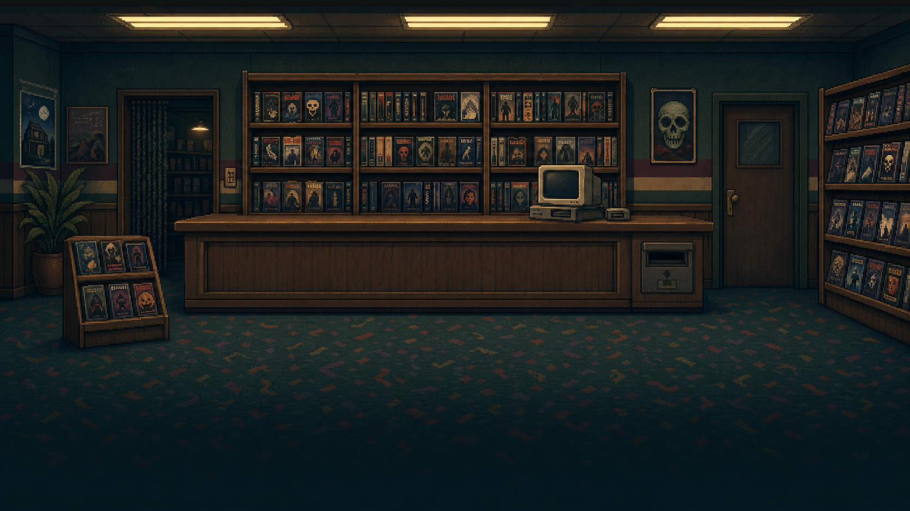

Listen before you recommend.
Meet customers, ask questions, and find a movie that fits their taste.
BE KIND. REWIND. RETHINK AI.
Welcome to Mr. Pelling’s video club. The shelves are full, the customers are waiting, and the future of this little store is in your hands.
▶ Enter the video clubPlay in your browser · Best on a laptop or desktop

OPEN FORA SMALL STORE. A BIG QUESTION.
Start behind the counter of a struggling 1990s video store. Listen to your regulars, pick a tape, and see what happens. As the queue grows, you’ll build new tools to help: rules, ratings, and a machine that spots patterns you might miss.
But a prediction is only the beginning. What happens when everyone gets the same recommendation? Which data should you use? And who gets to decide what “better” means?
Build the recommendations.
Live with the consequences.
YOUR SHIFT AT THE VIDEO CLUB
Learn by doing: choose, experiment, make mistakes, and try a different idea.
Meet customers, ask questions, and find a movie that fits their taste.
Automate your choices, then discover who a simple rule leaves behind.
Explore customer ratings and compare personal favorites with averages.
Use shared preferences to predict missing ratings—and face incomplete data.
Explore hidden factors and prediction error, then examine privacy and popularity bias.
Match movie features to customers and uncover the limits of those descriptions.
Find an underserved audience and put together a movie’s creative brief.
Explore prompts and visual styles. Live AI image generation needs a connected server.
Use a desktop browser with a mouse or trackpad. The first load downloads the game and may take a moment. Fullscreen gives the store a little more room. The current camp build asks for a display name and study consent before gameplay; Cancel returns to the menu.
This is the ROC AI 26 browser build, exported August 8, 2026. The public edition runs on GitHub Pages. Live AI poster generation and server telemetry are unavailable on this static host.
For educators: use the story to discuss human judgment, incomplete data, privacy, and popularity bias alongside the recommendation techniques.